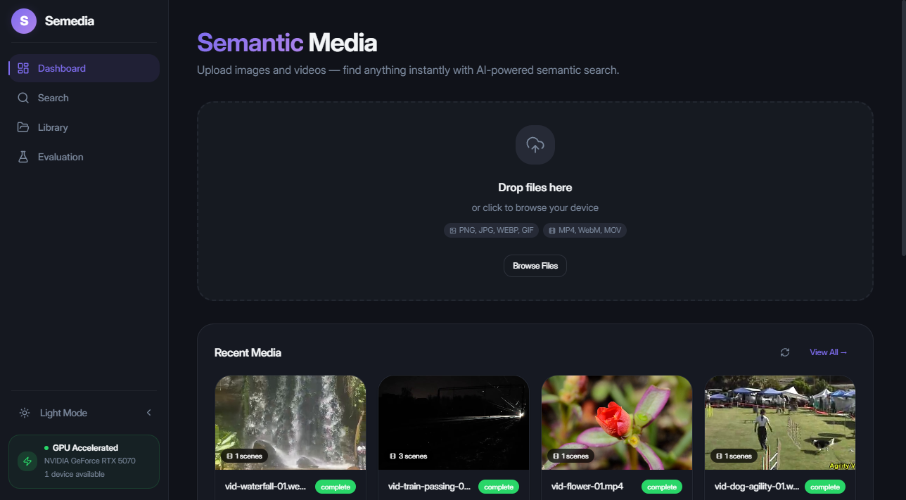
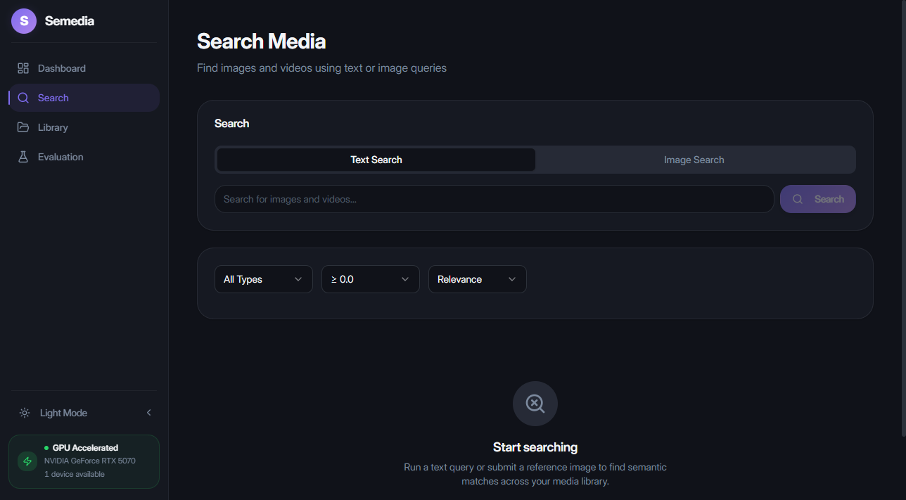
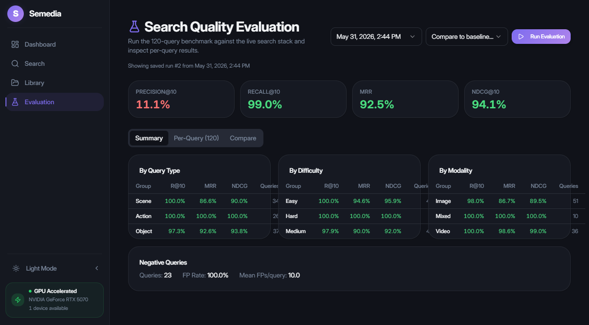
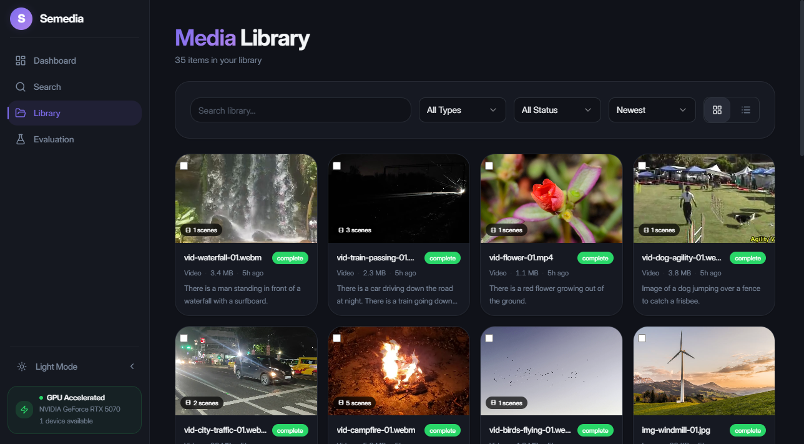

Tài liệu Hệ thống Semedia
Ảnh chụp ngày 31/05/20261. Tổng quan
Semedia là hệ thống tìm kiếm media ngữ nghĩa cục bộ, cho phép tìm kiếm bằng ngôn ngữ tự nhiên trên hình ảnh và video. Hệ thống chạy dưới dạng một Docker Compose stack khép kín gồm năm dịch vụ, kết hợp CLIP visual-language embeddings với TF-IDF keyword search để truy xuất và xếp hạng lai (hybrid).
Khả năng chính
- 5 dịch vụ Docker — gateway API, media worker (GPU), search API, cơ sở dữ liệu PostgreSQL, giao diện React
- Tìm kiếm lai — CLIP vector similarity kết hợp với TF-IDF keyword matching để truy xuất hiệu quả
- Hiểu video — tự động phát hiện cảnh, tạo mô tả cho từng cảnh, embeddings đa khung hình
- Giao diện React — UI hiện đại cho tải lên, duyệt thư viện, và tìm kiếm ngữ nghĩa với kết quả thời gian thực
- Khung đánh giá — 120 truy vấn đã đánh giá với tính toán chỉ số tự động và so sánh baseline
Nguyên tắc thiết kế
- Ưu tiên cục bộ — toàn bộ xử lý diễn ra trên thiết bị; không gọi API bên ngoài cho suy luận
- Tăng tốc GPU — PyTorch hỗ trợ CUDA cho việc tạo mô tả và embedding nhanh chóng
- Dịch vụ module hóa — mỗi dịch vụ có một trách nhiệm duy nhất và giao tiếp qua HTTP
- Logic dùng chung — các model, pipeline code, và search helpers chung nằm trong một gói Python chia sẻ

2. Kiến trúc
Semedia bao gồm năm dịch vụ Docker giao tiếp qua mạng nội bộ, với một gói Python dùng chung cung cấp các model và logic chung.
Kiến trúc tuân theo mô hình microservice, trong đó mỗi dịch vụ sở hữu một miền cụ thể: gateway xử lý giao tiếp bên ngoài, media worker sở hữu các tác vụ ML nặng GPU, và search API sở hữu logic truy xuất. Sự phân tách này cho phép mở rộng và phát triển độc lập từng thành phần.
Các dịch vụ
| Dịch vụ | Vai trò | Công nghệ |
|---|---|---|
frontend | Giao diện người dùng phục vụ qua nginx | React 19, Vite 8, Tailwind CSS 4 |
gateway-api | API công khai, phục vụ file, proxy tìm kiếm | FastAPI, Python 3.12 |
media-worker | Xử lý GPU: phát hiện cảnh, tạo mô tả, embeddings | PyTorch, BLIP-large, CLIP ViT-B/16 |
search-api | Truy xuất lai và xếp hạng | FastAPI, scikit-learn |
db | Lưu trữ bền vững | PostgreSQL 16 |
Gói dùng chung: semedia_shared
Chứa các SQLAlchemy models, logic pipeline xử lý, search/ranking helpers, quản lý keyword index, và tiện ích cấu hình. Được sử dụng bởi gateway-api, media-worker, và search-api.
models— Định nghĩa SQLAlchemy ORM cho MediaItem, VideoScene, KeywordIndexArtifact, EvaluationRunpipeline— Điều phối phát hiện cảnh, tạo mô tả, sinh embeddingsearch— Vector similarity, keyword matching, hợp nhất kết quảranking— Fusion scoring, reranking bonuses, đảm bảo đa dạngindex— Xây dựng, tuần tự hóa, và tải TF-IDF indexconfig— Phân tích và xác thực biến môi trường
Mô hình giao tiếp
- Frontend → Gateway — HTTP REST (tải lên, tìm kiếm, phục vụ media, xóa)
- Gateway → Media Worker — HTTP nội bộ (xử lý media, embed text/image)
- Gateway → Search API — HTTP nội bộ (proxy tìm kiếm)
- Search API → Media Worker — HTTP nội bộ (embed query text/image)
- Tất cả dịch vụ → DB — PostgreSQL qua SQLAlchemy (connection pooling)
- Phục vụ Frontend — nginx phục vụ static React build, proxy
/api/đến gateway
3. Luồng dữ liệu
Semedia có ba luồng dữ liệu chính: tải lên/xử lý (đường ghi), tìm kiếm văn bản (đường đọc), và tìm kiếm hình ảnh (đường đọc trực quan). Mỗi luồng đi qua nhiều dịch vụ với ranh giới trách nhiệm rõ ràng.
a) Luồng tải lên & xử lý
Khi người dùng tải media lên qua giao diện, file được gateway API tiếp nhận, lưu vào đĩa và cơ sở dữ liệu, sau đó được media worker xử lý đồng bộ. Toàn bộ pipeline — phát hiện cảnh, tạo mô tả, embedding, và đánh chỉ mục — hoàn thành trước khi phản hồi tải lên được trả về. Thiết kế đồng bộ này đơn giản hóa kiến trúc nhưng đồng nghĩa với việc độ trễ tải lên tỷ lệ thuận với kích thước và độ phức tạp của file (video nhiều cảnh mất nhiều thời gian hơn một hình ảnh đơn).
b) Luồng tìm kiếm văn bản
Truy vấn văn bản được media worker embed qua endpoint /embed-text, tạo ra vector CLIP 512 chiều. Search API sau đó thực thi hai kênh truy xuất song song: tìm kiếm vector (calibrated cosine similarity so với tất cả embeddings đã lưu) và tìm kiếm từ khóa (TF-IDF cosine so với kho mô tả). Kết quả từ cả hai kênh được hợp nhất, tính điểm qua weighted fusion, xếp hạng lại với tín hiệu bonus, và lọc đa dạng trước khi trả về giao diện.
c) Luồng tìm kiếm hình ảnh
Truy vấn hình ảnh được embed qua /embed-image trên media worker, sau đó chỉ khớp vector (không có kênh từ khóa) trước khi xếp hạng. Điều này cho phép chức năng "tìm hình ảnh tương tự" — người dùng có thể tải lên hoặc chọn một hình ảnh tham chiếu và tìm media có nội dung trực quan tương tự. Vì không có truy vấn văn bản, kênh từ khóa bị bỏ qua hoàn toàn và trọng số fusion thực tế là 1.0 cho kênh vector.
4. Công nghệ
Semedia được xây dựng trên nền tảng Python + TypeScript hiện đại, tối ưu cho suy luận GPU cục bộ và phát triển frontend nhanh.
Backend
| Thành phần | Công nghệ | Mục đích |
|---|---|---|
| Ngôn ngữ | Python 3.12 | Hệ sinh thái ML, hỗ trợ async |
| API Framework | FastAPI | HTTP async hiệu suất cao với auto-docs |
| ORM | SQLAlchemy 2 | Truy cập CSDL type-safe với hỗ trợ async |
| Cơ sở dữ liệu | PostgreSQL 16 | JSONB cho embeddings, lưu trữ ACID mạnh mẽ |
| ML Framework | PyTorch (CUDA) | Suy luận model tăng tốc GPU |
| Vision/Language | Hugging Face Transformers | BLIP-large captioning, CLIP ViT-B/16 embeddings |
| Truy xuất văn bản | scikit-learn | TfidfVectorizer cho keyword index |
| Xử lý video | PySceneDetect | Phát hiện ranh giới cảnh thích ứng |
Frontend
| Thành phần | Công nghệ | Mục đích |
|---|---|---|
| Framework | React 19 | UI component-based với concurrent features |
| Ngôn ngữ | TypeScript | Type safety và hỗ trợ IDE |
| Build Tool | Vite 8 | HMR nhanh và production builds tối ưu |
| Styling | Tailwind CSS 4 | CSS utility-first với design tokens |
| Components | Radix UI | Primitives accessible, unstyled |
Hạ tầng
| Thành phần | Công nghệ | Mục đích |
|---|---|---|
| Điều phối | Docker Compose | Triển khai cục bộ đa dịch vụ |
| GPU Runtime | NVIDIA Container Toolkit | GPU passthrough vào containers |
| Web Server | nginx | Phục vụ file tĩnh frontend |
5. Mô hình dữ liệu
Schema cơ sở dữ liệu gồm bốn bảng chính được quản lý qua SQLAlchemy models trong gói dùng chung. Tất cả models sử dụng khóa chính integer tự tăng và được truy cập qua giao diện async session của SQLAlchemy 2.
Embeddings được lưu dưới dạng mảng JSONB (danh sách float) thay vì kiểu vector chuyên dụng, giữ hệ thống đơn giản và native PostgreSQL mà không cần extension như pgvector. Điều này đánh đổi hiệu suất truy vấn ở quy mô lớn để lấy sự đơn giản ở quy mô demo.
MediaItem
| Cột | Kiểu | Ghi chú |
|---|---|---|
| id | Integer PK | Tự tăng |
| file_path | String | Đường dẫn tương đối trong MEDIA_ROOT |
| original_filename | String | Tên file người dùng tải lên |
| media_type | String | "image" hoặc "video" |
| status | String | pending → processing → completed |
| duration | Float | Thời lượng video tính bằng giây |
| caption | Text | Mô tả được tạo tự động |
| embedding | JSONB | Vector embedding CLIP |
| index_key | String | Khóa trong keyword index |
| created_at / updated_at | DateTime | Dấu thời gian |
VideoScene
| Cột | Kiểu | Ghi chú |
|---|---|---|
| id | Integer PK | Tự tăng |
| media_id | Integer FK | → MediaItem.id |
| scene_index | Integer | Số thứ tự cảnh (bắt đầu từ 0) |
| start_time / end_time | Float | Giây |
| keyframe_path | String | Hình ảnh keyframe trích xuất |
| thumbnail_path | String | Thumbnail nhỏ hơn |
| caption | Text | Mô tả cảnh |
| embedding | JSONB | Embedding CLIP mean-pooled đa khung hình |
| index_key | String | Khóa trong keyword index |
KeywordIndexArtifact
| Cột | Kiểu | Ghi chú |
|---|---|---|
| id | Integer PK | Tự tăng |
| artifact_key | String | Định danh artifact duy nhất |
| format_version | Integer | Phiên bản tuần tự hóa |
| document_count | Integer | Số tài liệu đã đánh chỉ mục |
| payload | LargeBinary | Ma trận TF-IDF + vocab đã tuần tự hóa |
| built_at | DateTime | Dấu thời gian xây dựng |
EvaluationRun
| Cột | Kiểu | Ghi chú |
|---|---|---|
| id | Integer PK | Tự tăng |
| created_at | DateTime | Dấu thời gian chạy |
| top_k | Integer | Độ sâu truy xuất (vd: 10) |
| compare_to | Integer FK | Lần chạy trước để so sánh |
| num_queries | Integer | Tổng số truy vấn đánh giá |
| summary | JSONB | Chỉ số tổng hợp |
| results | JSONB | Kết quả từng truy vấn |
Sơ đồ quan hệ thực thể
6. Pipeline xử lý
Media worker xử lý mỗi file tải lên qua một pipeline xác định. Toàn bộ pipeline chạy đồng bộ trong một request duy nhất đến media worker.
Bước 1: Lưu trữ file
File tải lên được lưu vào MEDIA_ROOT với đường dẫn duy nhất dựa trên UUID. Một bản ghi MediaItem được tạo trong cơ sở dữ liệu với status=processing. Tên file gốc được giữ lại cho mục đích hiển thị.
Bước 2: Phát hiện cảnh (chỉ Video)
Đối với file video, PySceneDetect chạy phát hiện nội dung thích ứng với ngưỡng cơ sở 27.0. Điều này chia video thành các cảnh riêng biệt về mặt ngữ nghĩa dựa trên thay đổi nội dung trực quan. Cho mỗi cảnh được phát hiện:
- Một keyframe đại diện được trích xuất tại điểm giữa cảnh
- Một thumbnail nhỏ hơn được tạo cho hiển thị UI
- N=3 khung hình được lấy mẫu đều trên toàn bộ thời lượng cảnh cho embedding đa khung hình
- Một bản ghi
VideoSceneđược tạo liên kết ngược vềMediaItemcha
Bước 3: Tạo mô tả
BLIP-large (Salesforce/blip-image-captioning-large) tạo mô tả ngôn ngữ tự nhiên cho mỗi hình ảnh hoặc keyframe cảnh. Pipeline bao gồm lọc mô tả yếu: nếu mô tả được tạo quá ngắn, quá chung chung, hoặc lặp lại, nó sẽ bị loại bỏ và tạo lại với tham số beam search điều chỉnh.
Bước 4: CLIP Embedding
openai/clip-vit-base-patch16 mã hóa mỗi hình ảnh hoặc keyframe thành vector embedding 512 chiều lưu dưới dạng JSONB. Đối với cảnh video, N=3 embedding khung hình lấy mẫu được tính riêng lẻ rồi mean-pooled thành một embedding cảnh đại diện duy nhất, nắm bắt biến thiên thời gian trong cảnh.
Bước 5: Xây dựng lại Keyword Index
Sau khi xử lý, TF-IDF keyword index được xây dựng lại từ đầu sử dụng tất cả mô tả trong cơ sở dữ liệu. Cấu hình:
- scikit-learn
TfidfVectorizer - Unigrams + bigrams (ngram_range=(1,2))
- Tối đa 10.000 features
- Loại bỏ English stop words
- Artifact tuần tự hóa lưu trong bảng
KeywordIndexArtifact
Bước 6: Hoàn thành
MediaItem.status được đặt thành completed. Item (và tất cả cảnh của nó, đối với video) giờ đã có thể tìm kiếm đầy đủ qua cả kênh vector và từ khóa.
7. Tìm kiếm & Xếp hạng
Kênh Vector
Truy vấn văn bản được embed qua CLIP vào cùng không gian 512 chiều với các media embeddings đã lưu. Cosine similarity được tính giữa vector truy vấn và mọi embedding đã lưu (hình ảnh + cảnh video). Điểm cosine CLIP thô thường rơi vào dải hẹp — thực nghiệm [0.15, 0.40] cho corpus này — nên một affine calibration ánh xạ tuyến tính dải này sang [0, 1]:
calibrated = (raw_cosine - 0.15) / (0.40 - 0.15)
calibrated = clamp(calibrated, 0.0, 1.0)Điều này đảm bảo điểm vector sử dụng toàn bộ dải [0, 1] và có cùng bậc độ lớn với điểm từ khóa cho fusion.
Kênh từ khóa
Truy vấn được vector hóa sử dụng cùng từ vựng TF-IDF với kho mô tả đã lưu. Cosine similarity được tính giữa vector TF-IDF truy vấn và mỗi vector tài liệu (mô tả) trong index. Kênh này xuất sắc ở khớp thuật ngữ chính xác và thực thể có tên cụ thể mà CLIP có thể không nắm bắt tốt. Điểm từ khóa tự nhiên nằm trong [0, 1] và không cần calibration.
Fusion
Điểm cơ sở cuối cùng kết hợp cả hai kênh với trọng số được điều chỉnh thực nghiệm:
score = 0.7 × vector_score + 0.3 × keyword_scoreTỷ lệ 70/30 phản ánh rằng CLIP embeddings nắm bắt ý nghĩa ngữ nghĩa rộng hơn (khái niệm trực quan, quan hệ không gian, ý tưởng trừu tượng), trong khi TF-IDF xuất sắc ở khớp thuật ngữ cụ thể mà CLIP có thể bỏ lỡ. Các item chỉ xuất hiện ở một kênh nhận đóng góp bằng không từ kênh còn lại.
Bonus xếp hạng lại
Sau fusion, các bonus cộng thêm thưởng cho tín hiệu văn bản mạnh chỉ ra độ liên quan cao:
- +0.08 — cụm từ truy vấn chính xác tìm thấy trong mô tả (khớp substring không phân biệt hoa thường). Điều này tăng mạnh các item có mô tả trực tiếp mô tả những gì người dùng tìm kiếm.
- +0.02 — mô tả phong phú (độ dài > 50 ký tự). Mô tả dài hơn cho thấy hiểu cảnh mô tả hơn, chất lượng cao hơn, tương quan với CLIP alignment tốt hơn.
Các bonus này là cộng thêm và có thể đẩy điểm vượt 1.0 trước khi clamp cuối cùng.
Đảm bảo đa dạng
Để ngăn một video đơn lẻ chiếm ưu thế kết quả với nhiều cảnh tương tự:
- Giới hạn mỗi media — Tối đa 2 cảnh mỗi media item xuất hiện trong kết quả cuối (cấu hình qua
SEARCH_MAX_PER_MEDIA) - Loại trùng mô tả — Kết quả có mô tả giống hệt được gộp lại thành instance có điểm cao nhất
- Sắp xếp — Sau lọc đa dạng, kết quả được sắp xếp lại theo điểm cuối giảm dần
Điểm cuối cùng
Sau fusion, bonus xếp hạng lại, và lọc đa dạng, điểm cuối cùng được clamp về [0, 1]. Kết quả dưới SEARCH_MIN_SCORE (mặc định 0.0) bị loại. Phản hồi giới hạn ở SEARCH_MAX_RESULTS (mặc định 20) items.
Một giai đoạn cross-encoder rerank tùy chọn tồn tại (điều khiển bởi SEARCH_RERANK_ENABLED) nhưng bị tắt mặc định. Đánh giá thực nghiệm cho thấy nó làm giảm chất lượng trên corpus nhỏ này — có thể vì các đánh giá semantic similarity của cross-encoder không phù hợp tốt với các truy vấn hẹp, cụ thể trong bộ đánh giá.
Sơ đồ Pipeline tính điểm

8. Hệ thống đánh giá
Semedia bao gồm một khung đánh giá tích hợp để đo chất lượng truy xuất so với một corpus cố định gồm các truy vấn đã đánh giá.
Corpus & Truy vấn
- 120 truy vấn đã đánh giá — 97 tích cực (mong đợi kết quả liên quan) + 23 tiêu cực (mong đợi không có kết quả)
- Corpus cố định 35 tài sản — 28 hình ảnh + 7 video từ Wikimedia Commons
- Tín dụng cấp cảnh video: một cảnh video khớp truy vấn được tính là hit
- Truy vấn bao phủ các danh mục đa dạng: động vật, phong cảnh, đồ vật, hành động, khái niệm trừu tượng, màu sắc, bố cục
- Truy vấn tiêu cực kiểm tra tính đặc hiệu: truy vấn cho các item không có trong corpus nên trả về rỗng hoặc kết quả độ tin cậy rất thấp
Giải thích chỉ số
| Chỉ số | Mô tả | Tổng hợp |
|---|---|---|
| P@10 | Tỷ lệ kết quả top-10 có liên quan | Trung bình chỉ tích cực |
| R@10 | Tỷ lệ tất cả item liên quan được tìm thấy trong top-10 | Trung bình chỉ tích cực |
| MRR | Nghịch đảo thứ hạng của kết quả liên quan đầu tiên | Trung bình chỉ tích cực |
| NDCG@10 | Normalized Discounted Cumulative Gain — thưởng item liên quan xếp hạng cao hơn | Trung bình chỉ tích cực |
Ảnh chụp hiện tại (31/05/2026)
| Chỉ số | Giá trị | Ghi chú |
|---|---|---|
| R@10 | 99.0% | Recall gần hoàn hảo — hầu hết mọi item liên quan được tìm thấy trong top 10 |
| MRR | 92.5% | Item liên quan thường xuất hiện ở hạng 1 hoặc 2 |
| NDCG@10 | 94.1% | Chất lượng xếp hạng mạnh — item liên quan được xếp gần đầu |
| P@10 | 11.1% | Bị giới hạn bởi ~1 item liên quan mỗi truy vấn trong corpus 35 tài sản (tối đa lý thuyết ~10%) |
R@10 và MRR cao chứng minh rằng hệ thống tìm kiếm lai đáng tin cậy tìm và xếp hạng nội dung liên quan. P@10 thấp là do kích thước corpus, không phải vấn đề chất lượng — với chỉ ~1 item liên quan mỗi truy vấn, 9 trong 10 kết quả trả về nhất thiết không liên quan.
Tính năng
- Theo dõi false-positive truy vấn tiêu cực (truy vấn nên trả về không có gì)
- Lưu trữ lần chạy trong cơ sở dữ liệu qua bảng
EvaluationRun - So sánh baseline giữa các lần chạy (báo cáo delta)
- Tự động seed corpus từ
testing/smoke-assets/
Phương pháp
Mỗi truy vấn tích cực có một hoặc nhiều item liên quan mong đợi được xác định bằng tên file hoặc cảnh. Trình chạy đánh giá thực thi mỗi truy vấn trên search API live, thu thập kết quả top-K, và tính chỉ số từng truy vấn. Chỉ số tổng hợp được tính là trung bình trên tất cả truy vấn tích cực (truy vấn tiêu cực chỉ đóng góp vào theo dõi false-positive).
Truy vấn video nhận tín dụng cấp cảnh: nếu bất kỳ cảnh nào của video mong đợi xuất hiện trong kết quả, truy vấn được coi là hit cho mục đích recall. Cho chỉ số xếp hạng (MRR, NDCG), thứ hạng của cảnh khớp đầu tiên được sử dụng.

9. Cấu hình
Các biến môi trường chính điều khiển hành vi của Semedia:
| Biến | Mặc định | Mô tả |
|---|---|---|
DATABASE_URL | — | Chuỗi kết nối PostgreSQL |
MEDIA_ROOT | — | Thư mục gốc cho file media đã lưu |
ML_DEVICE | auto | Thiết bị tính toán: auto, cuda, hoặc cpu |
ML_STRICT_CUDA | 0 | Dừng ngay nếu CUDA không khả dụng (1=bật) |
ML_PRELOAD_MODELS | 0 | Tải trước model khi khởi động (1=bật) |
CLIP_MODEL_NAME | openai/clip-vit-base-patch16 | Định danh model CLIP |
CAPTION_MODEL_NAME | Salesforce/blip-image-captioning-large | Định danh model tạo mô tả |
SCENE_DETECTION_THRESHOLD | 27.0 | Ngưỡng thích ứng PySceneDetect |
SCENE_FRAME_SAMPLE_COUNT | 3 | Số khung hình lấy mẫu mỗi cảnh cho embedding |
SEARCH_VECTOR_WEIGHT | 0.7 | Trọng số kênh vector trong fusion |
SEARCH_KEYWORD_WEIGHT | 0.3 | Trọng số kênh từ khóa trong fusion |
SEARCH_MAX_RESULTS | 20 | Số kết quả tối đa trả về |
SEARCH_MAX_PER_MEDIA | 2 | Số cảnh tối đa mỗi media trong kết quả |
SEARCH_MIN_SCORE | 0.0 | Ngưỡng điểm tối thiểu |
SEARCH_RERANK_ENABLED | 0 | Cross-encoder rerank (0=tắt, 1=bật) |
LOG_LEVEL | INFO | Mức logging Python |
CORS_ALLOW_ALL_ORIGINS | 0 | Cho phép tất cả CORS origins (1=bật) |
Ghi chú cấu hình
- Chọn model —
CLIP_MODEL_NAMEvàCAPTION_MODEL_NAMEchấp nhận bất kỳ định danh model Hugging Face nào. Thay đổi model yêu cầu xử lý lại toàn bộ media để tạo lại embeddings và mô tả. - Điều chỉnh tìm kiếm — Trọng số vector/keyword (0.7/0.3) được điều chỉnh thực nghiệm trên corpus đánh giá. Thay đổi các giá trị này ảnh hưởng ngay lập tức đến tất cả kết quả tìm kiếm mà không cần xử lý lại.
- Cấu hình GPU — Đặt
ML_STRICT_CUDA=1trong production để dừng ngay nếu GPU không truy cập được, thay vì âm thầm fallback sang CPU (sẽ cực kỳ chậm cho BLIP-large). - Tải trước —
ML_PRELOAD_MODELS=1thêm ~30-60 giây vào khởi động nhưng loại bỏ độ trễ cold-start ở request đầu tiên. Khuyến nghị cho production. - Phát hiện cảnh — Giá trị
SCENE_DETECTION_THRESHOLDthấp hơn tạo nhiều cảnh hơn (nhạy hơn với thay đổi); giá trị cao hơn tạo ít cảnh hơn, dài hơn.
10. Vận hành
Yêu cầu tiên quyết
- Docker và Docker Compose đã cài đặt
- NVIDIA Container Toolkit (cho tăng tốc GPU trong media-worker)
- Driver NVIDIA trên host expose GPU vào containers
- Đủ dung lượng đĩa cho lưu trữ media và trọng số model (~3 GB cho BLIP + CLIP)
Khởi động Stack
docker compose up --build gateway-api frontendLệnh này build và khởi động tất cả năm dịch vụ (db, media-worker, search-api, gateway-api, frontend). Media-worker sẽ tải trước model khi khởi động khi ML_PRELOAD_MODELS=1 được đặt (mặc định trong Docker Compose).
Xác minh dịch vụ
# Kiểm tra tất cả containers đang chạy
docker compose ps
# Kiểm tra gateway health
curl http://127.0.0.1:8000/api/v1/runtime/
# Kiểm tra frontend
curl -s http://127.0.0.1:8000/ | head -5Seed Corpus đánh giá
# Từ thư mục gốc Semedia/ — seed corpus cố định 35 tài sản
docker compose --profile test run --rm --build service-tests pytest testing/ -k "seed"Chạy đánh giá
# Thực thi tất cả 120 truy vấn đã đánh giá và tính chỉ số
docker compose --profile test run --rm --build service-tests pytest testing/ -k "evaluation"Smoke Tests
python testing/smoke_stack.pyXác thực khả năng truy cập frontend, gateway health, tải lên hình ảnh, tải lên video, tìm kiếm, và xóa — end-to-end qua Docker. Sử dụng tài sản từ testing/smoke-assets/.
Logs & Gỡ lỗi
# Theo dõi logs cho một dịch vụ cụ thể
docker compose logs -f media-worker
# Đặt logging chi tiết
LOG_LEVEL=DEBUG docker compose up gateway-api11. Kiểm thử
Semedia sử dụng chiến lược kiểm thử ba tầng bao gồm unit/integration tests, evaluation benchmarks, và end-to-end smoke tests.
Service Tests (pytest)
- Cơ sở dữ liệu SQLite cô lập (không phụ thuộc PostgreSQL cho chạy cục bộ nhanh)
- Chỉ chạy CPU (không yêu cầu GPU)
- Model nhẹ/mock cho iteration nhanh
- Tests bao phủ: model CRUD, pipeline logic, search ranking, index build/load, API endpoints
- Chạy qua:
docker compose --profile test run --rm --build service-tests
# Chạy tất cả service tests
docker compose --profile test run --rm --build service-tests
# Chạy file test cụ thể
docker compose --profile test run --rm service-tests pytest testing/test_search.py -vBộ Benchmark đánh giá
- Xác thực artifacts đánh giá có mặt và đúng định dạng (định nghĩa truy vấn, kết quả mong đợi)
- Seed corpus cố định 35 tài sản (28 hình ảnh + 7 video từ Wikimedia Commons)
- Chạy tất cả 120 truy vấn đã đánh giá trên search API live và tính chỉ số
- So sánh với baselines đã lưu để phát hiện regression
- Báo cáo lỗi từng truy vấn và delta chỉ số tổng hợp
Smoke Tests (smoke_stack.py)
Một script Python kiểm tra toàn bộ stack end-to-end qua Docker:
- Khả năng truy cập frontend (HTTP 200 từ nginx)
- Gateway health và runtime endpoints
- Tải lên hình ảnh → xử lý → status=completed
- Tải lên video → phát hiện cảnh → xử lý → status=completed
- Tìm kiếm văn bản trả về kết quả liên quan
- Tìm kiếm hình ảnh trả về kết quả liên quan
- Xóa media loại bỏ item và các file liên quan
# Chạy smoke tests (yêu cầu stack đang chạy)
python testing/smoke_stack.py12. Hạn chế & Hướng phát triển
Hạn chế hiện tại
| Hạn chế | Ảnh hưởng | Hướng khắc phục |
|---|---|---|
| P@10 bị giới hạn bởi corpus nhỏ | Với ~1 item liên quan mỗi truy vấn trong 35 tài sản, precision không thể vượt ~10% | Corpus lớn hơn với nhiều item liên quan mỗi truy vấn |
| Cross-encoder rerank làm giảm chất lượng | Bị tắt mặc định; đo được làm giảm chất lượng trên corpus cụ thể này | Điều chỉnh lại trên corpus lớn hơn nơi semantic reranking thêm giá trị |
| Không có vector DB phân tán | Cosine similarity cục bộ trên tất cả embeddings; O(n) mỗi truy vấn | pgvector, Qdrant, hoặc Milvus cho ANN indexing |
| Không có Redis/Celery | Xử lý đồng bộ; video dài chặn request | Hàng đợi tác vụ nền với theo dõi tiến trình |
| Đơn GPU | Không hỗ trợ multi-GPU hoặc suy luận phân tán | Model parallelism hoặc GPU scheduling cấp request |
| Corpus quy mô demo | 35 tài sản (28 hình ảnh + 7 video) — không phải khối lượng production | Stress testing với 10K+ tài sản |
| Không có indexing tăng dần | TF-IDF index xây dựng lại từ đầu mỗi lần tải lên | Cập nhật tăng dần hoặc index append-only |
| Mô tả chỉ tiếng Anh | BLIP tạo mô tả tiếng Anh; tìm kiếm thiên về tiếng Anh | Model tạo mô tả đa ngôn ngữ |
Hướng phát triển tương lai
- Hàng đợi xử lý bất đồng bộ (Redis + Celery hoặc tương tự) cho tải lên không chặn
- Tích hợp vector database (pgvector, Qdrant, hoặc Milvus) cho tìm kiếm approximate nearest-neighbor có khả năng mở rộng
- Corpus đánh giá lớn hơn để mở khóa đo P@10 có ý nghĩa và stress-test xếp hạng
- Multi-GPU và batch inference cho throughput cao hơn trên thư viện media lớn
- Cross-encoder reranking điều chỉnh cho corpus lớn hơn, đa dạng hơn nơi nó có thể chứng minh giá trị
- Vòng phản hồi người dùng cho học relevance và xếp hạng cá nhân hóa
- Cập nhật keyword index tăng dần (tránh rebuild toàn bộ mỗi lần tải lên)
- Tối ưu tạo thumbnail và lazy loading trong frontend
- Phân tích audio track cho video (speech-to-text, phát hiện sự kiện âm thanh)
- Tối ưu tạo thumbnail và định dạng WebP cho payload nhỏ hơn
- Tiến trình xử lý thời gian thực qua WebSocket hoặc SSE
- Hỗ trợ đa ngôn ngữ cho mô tả và truy vấn tìm kiếm
